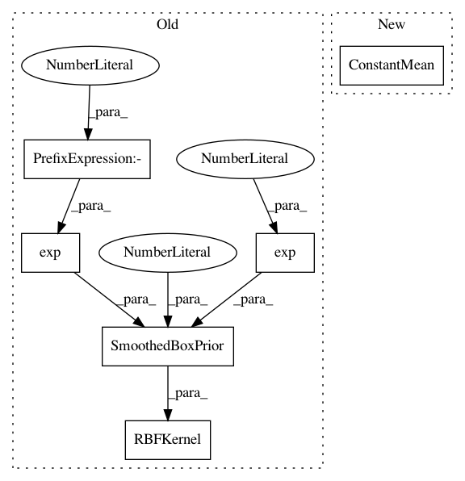

9a73eb555d9dc212b92946e838770247d416f8f3,test/examples/test_simple_gp_classification.py,GPClassificationModel,__init__,#GPClassificationModel#Any#,31
Before Change
super(GPClassificationModel, self).__init__(train_x)
self.mean_module = ConstantMean(prior=SmoothedBoxPrior(-1e-5, 1e-5))
self.covar_module = ScaleKernel(
RBFKernel(log_lengthscale_prior=SmoothedBoxPrior(exp(-5), exp(6), sigma=0.1, log_transform=True)),
log_outputscale_prior=SmoothedBoxPrior(exp(-5), exp(6), sigma=0.1, log_transform=True),
)
After Change
variational_distribution = VariationalDistribution(train_x.size(0))
variational_strategy = VariationalStrategy(self, train_x, variational_distribution)
super(GPClassificationModel, self).__init__(variational_strategy)
self.mean_module = gpytorch.means.ConstantMean()
self.covar_module = gpytorch.kernels.ScaleKernel(gpytorch.kernels.RBFKernel())
def forward(self, x):
mean_x = self.mean_module(x)
In pattern: SUPERPATTERN
Frequency: 3
Non-data size: 6
Instances
Project Name: cornellius-gp/gpytorch
Commit Name: 9a73eb555d9dc212b92946e838770247d416f8f3
Time: 2018-10-28
Author: gardner.jake@gmail.com
File Name: test/examples/test_simple_gp_classification.py
Class Name: GPClassificationModel
Method Name: __init__
Project Name: cornellius-gp/gpytorch
Commit Name: dbb3361434fb06d61dcbbac36bd139bdedd076b8
Time: 2018-09-23
Author: jrg365@cornell.edu
File Name: test/examples/test_hadamard_multitask_gp_regression.py
Class Name: HadamardMultitaskGPModel
Method Name: __init__
Project Name: cornellius-gp/gpytorch
Commit Name: bb353808c6b2a95bab663d44b29b1a7626808466
Time: 2019-11-11
Author: jrg365@cornell.edu
File Name: test/examples/test_simple_gp_regression.py
Class Name: ExactGPModel
Method Name: __init__